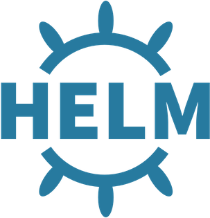
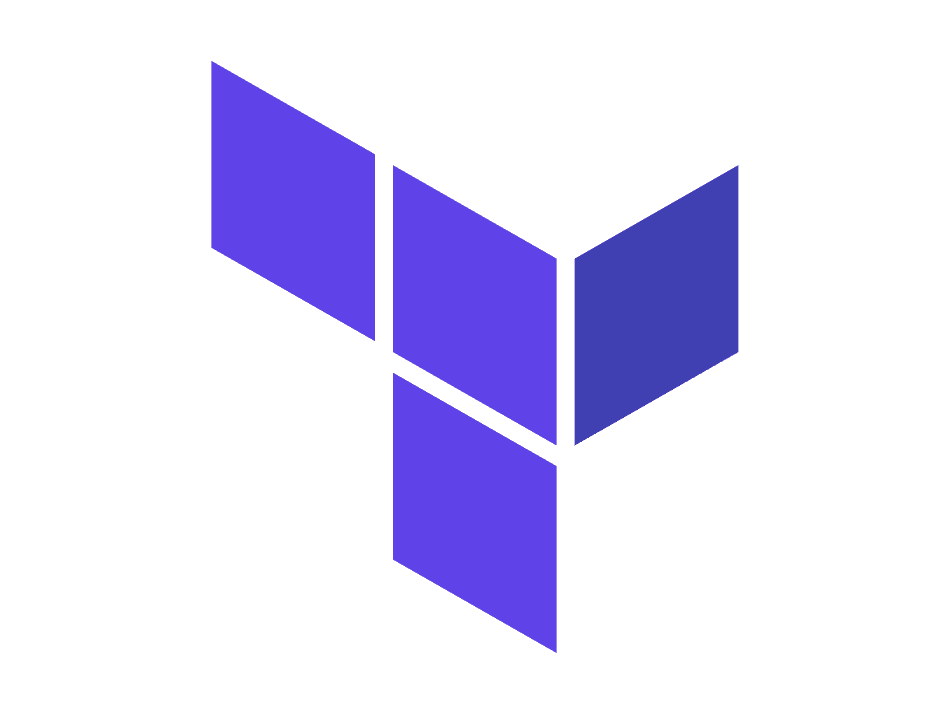

H
e
l
l
o
(
)
;
I
'
m
C
y
r
i
n
e
M
a
a
l
o
u
l
D
e
v
S
e
c
O
p
s
P
r
o
d
u
c
t
O
w
n
e
r
.
I am deeply passionate about empowering individuals and organizations to innovate more efficiently.
I like solving problems that make a real difference for the people using the products I build. Whether it's helping a customer overcome a technical challenge, simplifying a developer workflow, or turning feedback into new platform capabilities, I enjoy finding practical solutions that create value. I'm naturally curious, always looking for better ways to build, automate, and improve, and I believe the best results come from working closely with people, listening first, and continuously learning.
 Jenkins
Jenkins
 Kubernetes
Kubernetes

Helm ArgoCD
ArgoCD

Terraform AWS
AWS
March 2026 - Present
September 2024 - February 2026
March 2023 - June 2024
February 2022 - February 2023
July 2021 - August 2021
August 2020 - September 2020